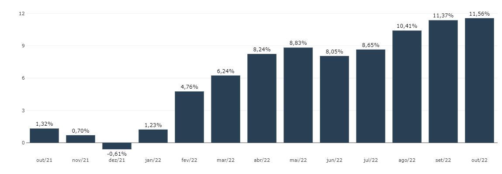
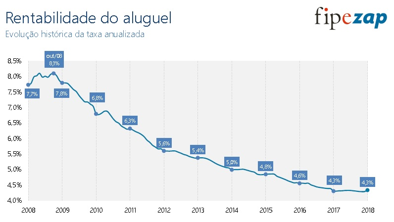

Avaliação de Alugueis
Parte 02
Luiz Fernando Palin Droubi
2024-11-23
Aproveitamento do Terreno
Uma questão que aparece em decorrência da aplicação do método evolutivo
Não é incomum que um imóvel seja alugado enquanto ocupando um terreno de forma “improdutiva”
- Exemplos:
- Um terreno de grandes dimensões (em planta), porém ocupado apenas em parte
- Um terreno edificado com um prédio comercial de 3 andares, situado em zona urbana com possibilidade de construção de até 5 andares
- Exemplos:
Como o terreno encontra-se subaproveitado, não se pode aplicar uma taxa de remuneração sobre todo o terreno para calcular o aluguel justo ao locatário
- Se o terreno é subaproveitado, quem deve arcar com a perda de renda decorrente deste subaproveitamento é o proprietário do terreno.
Cuidado:
- O aproveitamento máximo do terreno está eventualmente ligado ao aproveitamento máximo legal, i.e. ao que se permite construir no terreno segundo o zoneamento municipal.
- O aproveitamento máximo do terreno, porém, também está ligado ao aproveitamento máximo econômico do terreno.
Por exemplo: regiões pouco desenvolvidas, onde, até pelo baixo preço dos terrenos, não se justifica economicamente a construção de prédios de vários pavimentos, apesar de ser permitida pela legislação.
Aproveitamento do Terreno
O coeficiente de aproveitamento do terreno é o coeficiente que relaciona as benfeitorias realmente existentes no terreno às benfeitorias que, caso erigidas no terreno, dariam-lhe o máximo e melhor aproveitamento.
O coeficiente de aproveitamento trata, portanto, não apenas da quantidade de área construída no terreno, mas à qualidade desta área construída e a sua idade (conservação).
Em regiões onde os terrenos são extremamente valiosos, para que a construção lhes dê um bom aproveitamento, não basta que seja grande. É necessário que seja de padrão condizente com o mercado local, pois, ao se propor a pagar uma quantia extremamente alta por um terreno, o investidor o faz pensando em nele implantar uma construção de alto padrão, ou seja, economicamente adequada ao valor do terreno. Exemplo flagrante dessa situação é o caso da Avenida Paulista, em São Paulo, onde os preços de terrenos chegam à casa dos 10 mil dólares o metro quadrado e onde a ocupação é de prédios novos e de altíssimo padrão (Candeloro, n.d., 45).
Cálculo do Coeficiente de Aproveitamento
- O coeficiente de aproveitamento pode ser descrito pela fórmula a seguir (Candeloro, n.d., 19; D’Amato e Alonso 2019, p, 129):
- \[C_A = \frac{A_{h-existente}}{A_{h-máxima}}\]
- Deve-se notar que o Coeficiente de Aproveitamento é calculado com áreas homogeneizadas, i.e. com áreas ponderadas conforme a escolha de pesos convenientes.
- Ponderar a área edificada segundo o aproveitamento do terreno (zoneamento)
- Ponderar a área edificada segundo a qualidade da área construída (CUB)
- Ponderar a área edificada segundo o grau de obsolescência da edificação
Cálculo do Coeficiente de Aproveitamento
- Exemplo:
- Um terreno com 10,0m de testada e área \(S = 400m^2\), situado em zona urbana com Taxa de Ocupação (TO) igual a 0,5 e Coeficiente de Aproveitamento (CA) igual a 1,0. Este terreno encontra-se em zona com valor do metro quadrado \(q_T = 2.000,00 /m^2\)
- Neste terreno encontra-se edificada uma edificação comercial com 450m2 de área construída, sendo 150m2 no térreo e 300m2 nos andares superiores
- A edificação possui padrão construtivo médio e tem idade de aproximadamente 10 anos, o que resulta num fator de obsolescência igual a 0,75.
- Considerar que o custo de construção equivale a 1,2 vezes o CUB do padrão R-8N (\(\text{R\$ }1.000,00/m^2\)), i.e. \(q_B = 1,2.\text{R-8N}\).
- Considerar que as áreas do térreo (lojas) tem peso 3 em relação às áreas superiores
- Calcular o Coeficiente de Aproveitamento do Terreno
- Após, calcular o valor do aluguel justo do terreno, considerando \(i = 8\%\), tanto para as benfeitorias, tanto para o terreno.
Resolução
Cálculo do Coeficiente de Aproveitamento
- Área homogeneizada existente
- Térreo (peso 3):
- \(A_{T-exist} = W_T.A_T = 3.150\)
- \(A_{T-exist} = 450m^2\)
- Superiores (peso 1):
- \(A_{S-exist} = W_S.A_S = 1.300\)
- \(A_{S-exist} = 300m^2\)
- Térreo (peso 3):
- Área homogeneizada máxima
- Térreo (peso 3):
- \(A_{T-max} = TO.S.W_T = 0,5.400.3 = 600m^2\)
- Superiores (peso 1):
- \(A_{S-max} = (CA-TO).S.W_S = (1-0,5).400.1\)
- \(A_{S-max} = 200m^2\)
- Térreo (peso 3):
- Coeficiente de Aproveitamento:
- \(CA = \frac{A_{h-existente}}{A_{h-máxima}}=\frac{750}{800}=0,9375\)
Resolução
Cálculo do valor do capital
- Capital Terreno:
- \(q_T = \text{R\$ }2.000,00/m^2\)
- \(V_T = q_T.S = 2.000.400 = 800.000\)
- Capital Benfeitoria:
- \(q_B = \text{R\$ }1.200,00/m^2\)
- \(f_o = 0,75\)
- \(V_B = f_o.q_B.A_B = 0,75.1.200.450 = 405.000\)
Método da Remuneração do Capital
- Capital Terreno:
- \(C_T = V_T.\text{CA} = 800.000.0,9375\)
- \(C_T =\text{R\$ }750.000,00\)
- Capital Benfeitoria:
- \(C_B = V_B = \text{R\$ }405.000\)
\[Al = \frac{(CT + CB).i}{12}={(750.000+405.000).8\%}{12}=\text{R\$}7.700,00/mês\]
Melhor: \(Al = 1.155.000∗[(1+8\%)^{1/12}−1]=\text{R\$}7.431,30/mês\)
Coeficiente de Aproveitamento
Redução do Coeficiente pela idade
Com o aumento da idade da edificação, as benfeitorias podem passar a não refletir mais o aproveitamento máximo do terreno;
É controverso se a idade deveria influenciar no cálculo do aproveitamento para fins de locação (para fins de venda, é unânime que sim)
Cuidado: os textos encontrados não mencionam, porém o avaliador deve observar o entorno do avaliando
- Se no entorno, os elementos amostrais coletados possuem idade aparente similar ao do avaliando, não há qualquer razão que indique o subaproveitamento do terreno
- Se, no entanto, o avaliando encontra-se em meio a diversos edifícios mais novos, é indicativo que deve ser aplicada a redução do Coeficiente pela idade
Coeficiente de Aproveitamento
Redução do Coeficiente pela idade
Fórmula de Dante Guerrero (Candeloro, n.d., 20):
\(CA_R = CA\left [R + (1-R).\frac{v}{V}\right ]\)
\(R\): residual da construção
\(v\): idade aparente da benfeitoria
\(V\): vida útil da benfeitoria
Exemplo:
- Mesmo caso anterior, em que \(CA = 750/800 = 0,9375\), considerar vida útil igual a 50 anos e Residual igual a 20%:
- \(CA_R = CA\left [R + (1-R).\frac{v}{V}\right ]\)
- \(CA = \frac{750}{800}\left [20\% + (1-20\%).\frac{10}{50}\right ] = 0,9375.(0,2+(1-0,2).10/50)\)
- \(CA = 0,3375\)
- Está incorreto!
- Correto seria: \(CA_R = CA\left [R + (1-R).\left (1-\frac{v}{V}\right )\right ] = \frac{750}{800}\left [20\% + (1-20\%).\left(1-\frac{10}{50}\right)\right ]\) \(CA = 0,9375.(0,2+0,64) = 0,7875\)
- Mesmo caso anterior, em que \(CA = 750/800 = 0,9375\), considerar vida útil igual a 50 anos e Residual igual a 20%:
Coeficiente de Aproveitamento
Redução do Coeficiente pela idade
Cuidado com a aplicação de fórmulas prontas!
Exemplo (Alonso and D’Amato 2017, 4–5):
- Suponhamos então que determinado terreno avaliando, com 2.304,00m2, situado em região onde a lei de uso e ocupação do solo fixa o coeficiente de aproveitamento 2 e taxa de ocupação 0,50, e que esteja ocupado por uma construção térrea com 22 anos de idade, vida útil de 60 anos e 700,00m2 de área construída total; as áreas ponderadas “existente” e “possível” são assim calculadas:
- \(A_{h-existente} = 700\times3,0 = 2.100,00m^2\)
- \(A_{h-possível} = 2.304\times0,5\times3,0 + 2.304\times0,5\times2,0 + 2\times2.304\times0,5\times1,0= 8.064,00m^2\)
- O que seria o \(CA_{básico}\)?
- \(CA_{básico} = \frac{2.100}{8.064}=0,26\)
- Aplicou-se \(C_{Ap} = 1 – [((E – e)/E).(0,20 + (0,80.(V – v)/V))]\)
- E chegou-se a: \(C_{Ap} = 1 – [((8.064 – 2.100)/8.064) (0,20 + (0,80.(60-22)/60))] = 1 – (0,7396 . 0,7067) = 0,477\)
- O coeficiente de aproveitamento aumentou após a consideração da idade!!!
- Pode-se perceber que o erro está no componente básico da fórmula!
- Correto seria: \(C_{Ap} = 1 – [ (e/E) . ( 0,20 + ( 0,80 . (V – v)/V))] = 1 – (0,26 . 0,7067) = 0,184\)
- Suponhamos então que determinado terreno avaliando, com 2.304,00m2, situado em região onde a lei de uso e ocupação do solo fixa o coeficiente de aproveitamento 2 e taxa de ocupação 0,50, e que esteja ocupado por uma construção térrea com 22 anos de idade, vida útil de 60 anos e 700,00m2 de área construída total; as áreas ponderadas “existente” e “possível” são assim calculadas:
Coeficiente de Aproveitamento
Redução do Coeficiente pela idade e padrão
De fato, como explicar a ocorrência de demolição de imóveis antes de atingirem sua vida útil? Geralmente isto acontece quando ocorre alteração ponderável do padrão em determinada região tornando as construções ali existentes obsoletas funcionalmente (Alonso and D’Amato 2017, 5).
Então, aos dois fatores endógenos (área e idade) deve ser acrescentado o padrão regional, de natureza exógena, portanto de caráter somatório (Alonso and D’Amato 2017, 6).
\[C_{Ap} = 1 – (1 - \frac{e}{E}).(0,20 + (0,80.(1 - v/V))) + (1 - p/P)\]
Exemplo (Alonso and D’Amato 2017, 6–8):
- Mesmos dados do anterior
- Porém, agora considerando que o padrão da construção existente é de 1,470xR-8N, enquanto no entorno prevalece um padrão mais alto, de 1,926xR-8N
Coeficiente de Aproveitamento
Redução do Coeficiente pela idade e padrão
- Solução (Alonso and D’Amato 2017, 8):
- \(C_{Ap} = 0,714\)
- Não faz o menor sentido!
- Solução lógica:
- \(C_{Ap} = 1 – [ (e/E) . (0,20 + (0,80.(V – v)/V)).(p/P)] = 1 – (0,26.0,7067.0.763) = 0,184\)
- Não faz sentido, ao meu ver, que a variável padrão seja considerada na forma aditiva, enquanto as outras são consideradas na forma multiplicativa.
Hipótese de Harper
Hipótese de Harper
A hipótese de Harper visa corrigir a área da loja para diferentes profundidades
A hipótese de Harper considera que o preço médio do metro quadrado varia de forma parabólica com relação à profundidade padrão para o local (D’Amato and Alonso 2019, 168)
A hipótese implica que:
- A primeira quarta parte da loja (da frente à via de acesso), corresponde à 50% do valor da loja;
- A segunda quarta parte equivale a 21%;
- A terceira quarta parte equivale a 16%;
- E a quarta quarta parte equivale a 13%.
A hipótese de Harper não corrige o efeito de Frente da loja
Hipótese de Harper
\[V_l = V_u(\sqrt{aSf_p}+A_p)\]
- \(a\): frente da loja
- \(S\): área da loja
- \(f_p\): fundo padrão (de 15 a 20m)
- \(A_P\): demais áreas
Hipótese de Harper
Exemplo (Adaptado de D’Amato and Alonso 2019, 168):
- Seja a amostra:
| Id | Frente | Prof | Vl |
|---|---|---|---|
| 1 | 8 | 8 | 450 |
| 2 | 8 | 10 | 450 |
| 3 | 8 | 12 | 500 |
| 4 | 8 | 14 | 500 |
| 5 | 8 | 16 | 500 |
| 6 | 8 | 18 | 550 |
| 7 | 8 | 20 | 600 |
| 8 | 8 | 22 | 700 |
| 9 | 8 | 24 | 750 |
| 10 | 8 | 26 | 750 |
| 11 | 8 | 28 | 785 |
| 12 | 8 | 30 | 850 |
Avaliar o aluguel de uma loja com 8x15\(m^2\)
\[VU_{hom} = \frac{VU.S}{\sqrt{a.S.f_p.}}\]
\[VU_{hom} = \frac{VU.S}{\sqrt{8.S.20}}\]
Hipótese de Harper
Solução:
- Homogeneização:
| Id | Frente | Prof | Vl | Area | VU | Harper | VUhom |
|---|---|---|---|---|---|---|---|
| 1 | 8 | 8 | 450 | 64 | 7,03 | 0,63 | 4,45 |
| 2 | 8 | 10 | 450 | 80 | 5,62 | 0,71 | 3,98 |
| 3 | 8 | 12 | 500 | 96 | 5,21 | 0,77 | 4,03 |
| 4 | 8 | 14 | 500 | 112 | 4,46 | 0,84 | 3,74 |
| 5 | 8 | 16 | 500 | 128 | 3,91 | 0,89 | 3,49 |
| 6 | 8 | 18 | 550 | 144 | 3,82 | 0,95 | 3,62 |
| 7 | 8 | 20 | 600 | 160 | 3,75 | 1,00 | 3,75 |
| 8 | 8 | 22 | 700 | 176 | 3,98 | 1,05 | 4,17 |
| 9 | 8 | 24 | 750 | 192 | 3,91 | 1,10 | 4,28 |
| 10 | 8 | 26 | 750 | 208 | 3,61 | 1,14 | 4,11 |
| 11 | 8 | 28 | 785 | 224 | 3,50 | 1,18 | 4,15 |
| 12 | 8 | 30 | 850 | 240 | 3,54 | 1,22 | 4,34 |
\(VU_{hom} =\)R$ 4,01\(/m^2\)
Avaliar o aluguel de uma loja com \(8\times17,5 = 140m^2\):
Homogeneização do avaliando: \(S_{hom} = \sqrt{8.140.20} \approx 150,0 m^2\)
Valor Locatício: \(Vl = S_{hom}.VU_{hom} = 150\times4,01\)
Valor Locatício: \(Vl \approx \text{R\$ }600,00\)
Hipótese de Harper
Exemplo 2:
Com os dados do exemplo anterior, calcular o aluguel de uma loja com 8x22,5m2, contando com mais 50\(m^2\) de sobreloja (mezzanino)
Solução:
- \(S_{hom} = \sqrt{8.180.20} + 50/2\)
- \(S_{hom} = 169,70 + 25 = 194,70m^2\)
- \(Vl = S_{hom}.VU_{hom} = 194,70\times4,01\)
- \(Vl \approx \text{R\$ }780,75\)
Cota parte
Cota parte
- Em muitos casos a avaliação desejada é de uma unidade do edifício e não do seu todo
- Assim surge o problema, nos casos de aplicação do método evolutivo, de saber qual cota-parte do terreno cabe àquela unidade que se deseja avaliar.
- Matematicamente:
- \(CP = \frac{A_{hu}}{A_{ht}}; \qquad CT_{un} = CT.CP\)
- CP: Cota-Parte
- CT: Capital Terreno (Total)
- CTun: Capital Terreno correspondente à unidade em análise
- Ahu: área homogeneizada da unidade
- Aht: área homogeneizada total
- \(CP = \frac{A_{hu}}{A_{ht}}; \qquad CT_{un} = CT.CP\)
Exemplo
Cálcular a Cota Parte do Térreo num edifício composto de um terreno de 400m2, com área construída de 200m2 no térreo e superiores de 400m2.
Considerar pesos 3:1
Solução:
- \(CP = \frac{A_{hu}}{A_{ht}} = \frac{A_{Terreo}.p_{Terreo}}{A_{Terreo}.p_{Terreo} + A_{Superiores}.p_{Superiores}}\)
- \(CP = \frac{200.3}{200.3+400.1} = \frac{600}{1.000} = 60\%\)
Cálculo do aluguel de uma cota parte
- Para o cômputo do aluguel de uma única unidade, pode-se calcular a Cota Parte (CP) da unidade e aplicar ao valor total do Capital Terreno.
- No entanto, se o objetivo for calcular apenas o valor do aluguel da unidade, pode-se calcular o Capital terreno referente à unidade (CTun) diretamente através da fórmula (Candeloro, p.63):
\[CT_{un} = q_t.\frac{A_{hu}}{TO.p_{Térreo} + (CA_{básico}-TO).p_{Superiores}}\]
- qt: Unitário do Terreno
- TO: Taxa de Ocupação do Terreno
- CAbásico: Coeficiente de Aproveitamento Básico do Terreno
Exemplo
Loja, com 200m2 no térreo e 100m2 no superior. O valor unitário do terreno é de qt = 1.000,00 R$/m2, porém sua área total é desconhecida, assim como as áreas construídas das outras áreas. Considerar TO = 0,8, CA = 3,5 e pesos 5:1
Solução:
- \(CT_{un} = q_t.\frac{A_{hu}}{TO.p_{Térreo} + (CA_{básico}-TO).p_{Superiores}}\)
- \(CT_{un} = 1.000,00.\frac{200.5+100.1}{0,8.5,0 + (3,5-0,8).1,0}\)
- \(CT_{un} = 164.179,10\)
Exercício
- Imaginem que o escritório de Avaliações e Perícias em que você trabalha foi contratado por um potencial comprador de um edifício localizado na região central da cidade para efetuar a avaliação do aluguel de diversas lojas e escritórios neste edifício;
- O edifício é constituído de Térreo + 2 andares, cada um com 150m2;
- O proprietário pretende ocupar com seu escritório pouco mais da metade da área do 2º pavimento (90 m2) e locar o restante;
- O proprietário informou que algumas pessoas já manifestaram interesse em locar espaços no seu prédio
- 1 interessado em instalar uma loja (térreo) com 90 m2;
- 1 interessado em uma loja (térreo) com 60 m2;
- 1 interessado em uma laje corporativa de 150 m2 para sua empresa (1º pavimento);
- 1 interessado na metade restante do 2º pavimento (60 m2);
- O potencial proprietário ainda deseja saber qual o valor do aluguel da área que ele próprio irá ocupar no 2º pavimento (90 m2), para fins de calcular o VPL da compra do edifício (aluguel implícito).
Exercício
- O diretor de Avaliações resolveu pulverizar o trabalho entre diversos avaliadores;
- No entanto, para que o resultado final seja um trabalho uniforme, o Diretor estabeleu os critérios que cada avaliador deverá considerar nas suas avaliações.
- Os critérios estabelecidos pelo Diretor, assim como os dados por ele disponibilizados para os avaliadores encontram-se nos próximos slides.
- Para uma melhor apresentação do trabalho, o Diretor solicitou que fosse utilizado o método da Cota Parte, evitando assim que o laudo final fique repleto de cálculos repetitivos.
Exercício
- Dados do Terreno:
- Área: 400m2
- qt = 2.000,00 R$/m2
- CA básico: 1
- TO: 0,5
- Pesos: 3:1 (térreo:superiores)
- Taxa de renda: 8% a.a.
- Considerar a idade no cálculo do coeficiente de aproveitamento, através da seguinte expressão:
- \(CA = \frac{A_{hu}}{A_{hexist}}.\left (0,2+0,8\frac{V-v}{V}\right )\)
- Dados da Benfeitoria:
- Idade aparente: 15 anos
- Vida útil: 60 anos
- Taxa de renda: 12% a.a.
- qb = 2.000,00 R$/m2 (x 1,2)
- Considerar a depreciação pelo método da linha reta, com valor residual igual a 20%.
- Considerar o Fator de Comercialização igual a 1,10, tanto para o Capital Terreno, quanto para o Capital Benfeitoria!
Exercício
Unidade 1: Loja (Térreo) com 90m2;
Unidade 2: Loja (Térreo) com 60m2;
Unidade 3: Laje corporativa (1º andar), com 150 m2;
Unidade 4: Sala Comercial (2º andar), com 60 m2;
Unidade 5: Sala Comercial (2º andar), com 90 m2;
DICAS:
- Para uma melhor apresentação, resolva pela fórmula da Cota-Parte, conforme solicitado;
- Elabore os cálculos em uma planilha eletrônica antes de escrever o resultado no editor de textos;
- Para verificação pode ser feito o cálculo do aluguel de cada andar em separado e depois aplicar a proporcionalidade entre a área do andar e a área da unidade.
Atualização de Aluguéis
Atualização de Aluguéis
A atualização de aluguéis é utilizada na aplicação do Método Comparativo de Dados de Mercado
A existência de poucos dados de mercado contemporâneos exige que seja feita a comparação de dados de aluguéis contratados em perídos anteriores
Exemplo: calcular o aluguel vigente em maio/2008 (D’Amato and Alonso 2019, 75):
| Id | Inicio | Prazo | Aluguel | Reajuste | Indice |
|---|---|---|---|---|---|
| 1 | 01/03/2014 | 60 | 1400 | Anual | IGP-M |
| 2 | 12/06/2015 | 60 | 1350 | Anual | IGP-M |
| 3 | 17/08/2015 | 48 | 1200 | Anual | IGP-M |
| 4 | 12/09/2015 | 48 | 1164 | Anual | IGP-M |
Atualização de Aluguéis
- Luvas: luvas são a cobrança de uma certa importância no início da locação (Candeloro, n.d., 70)
- Pela atual legislação, as luvas só podem ser cobradas no início da locação, porém não na renovação;
- Para o tratamento equânime dos dados de aluguéis com ou sem luvas, estas, quando existentes, devem ser diluídas e acrescentadas ao valor mensal do aluguel;
- É necessário, para isto, aplicação de juros e correção monetária;
- Exemplo (D’Amato and Alonso 2019, 169–70):
- Aluguel com contrato de 5 anos (60 meses).
- Valor locatício mensal: R$ 2.000,00
- Luvas: R$ 50.000
- Selic: 9,25% a.a. (0,74% a.m.)
- Correção monetária: 1,37% a.a. (0,114% a.m.)
- Aluguel com contrato de 5 anos (60 meses).
- Solução:
- Taxa efetiva: \((1+0,0074).(1+0,00114)-1=0,855\%\)
- Fator de recuperação do capital: \(FRC(0,855\%, 60) = 0,02137\)
- Aluguel: \[Al = 2.000 + 50.000\times0,02137 = 3.067,00/\text{mês}\]
Atualização de Aluguéis
- Por que sou contrário?
- Equilíbrio dos mercados imobiliário e de ativos
- Quando o primeiro contrato foi firmado, em março de 2014, a atividade econômica ainda estava acelerada (desemprego baixo, renda alta)
- Em 2015, a Atividade Econômica já havia caído bruscamente, o que afeta o mercado de aluguéis.

Equilíbrio dos Mercados
Choque de demanda
Efeito de um choque de demanda (atividade econômica). Fonte: DiPasquale and Wheaton (1996; apud Adams and Füss 2010)
Efeito de um aumento da taxa de juros de longo prazo
Efeito de um aumento de juros de longo prazo. Fonte: DiPasquale and Wheaton (1996; apud Adams and Füss 2010)
Efeito do aumento de custos de construção
Efeito de um aumento de custos de construção. Fonte: DiPasquale and Wheaton (1996; apud Adams and Füss 2010)
Como entender o mercado imobiliário (1)
- A pandemia de Covid-19 acarretou num aumento dos custos de construção, porém os juros de longo prazo também cederam:
- O aumento dos custos de construção diminui o output do mercado de construção, o que leva a uma diminuição do estoque, o que por sua vez aumenta o preço dos aluguéis.
Como entender o mercado imobiliário (2)
- Após a pandemia, os juros de longo prazo, que haviam caído, voltaram a elevar-se:

- O aumento dos juros de longo prazo diminue o apetite dos investidores por imóveis e impacta o mercado de construção, o que também leva a aumento dos aluguéis.
Como entender o mercado imobiliário (3)
- Uma visão de prazo maior:
Como entender o mercado imobiliário (4)
- A atividade econômica vem se recuperando após o baque da pandemia de COVID-19:
- O aumento da atividade econômica leva ao aumento do preço dos aluguéis.
Como entender o mercado imobiliário (5)
- Resultado:

Como entender o mercado imobiliário (6)
- Para melhor compreender o slide anterior:

Como entender o mercado imobiliário (7)
- Visão de mais longo prazo:

Referências
Adams, Zeno, and Roland Füss. 2010. “Macroeconomic Determinants of International Housing Markets.” Journal of Housing Economics 19 (1): 38–50. https://doi.org/https://doi.org/10.1016/j.jhe.2009.10.005.
Alonso, Nelson Roberto Pereira, and Mônica D’Amato. 2017. “O Aproveitamento Do Terreno à Luz Das Normas Técnicas,” 10.
Candeloro, Milton. n.d. “Avaliação de Aluguéis.” Instituto Brasileiro de Educação Continuada.
D’Amato, Mônica, and Nelson Roberto Pereira Alonso. 2019. Avaliação de Aluguéis. Edited by Leud. 4th ed. São Paulo.
DiPasquale, D., and W. C. Wheaton. 1996. Urban Economics and Real Estate Markets. New York: Prentice Hall.